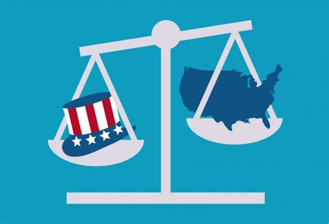
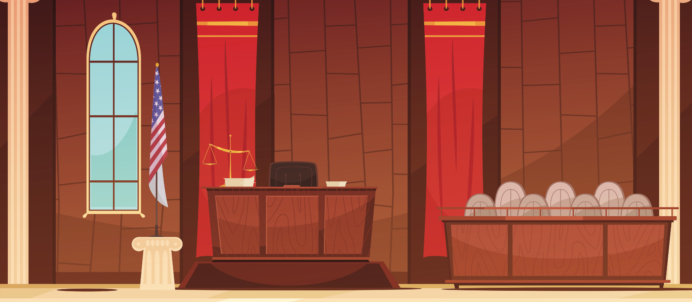

Judges and Judicial Decision-Making
Overview
Who are Judges?
What do they do?
How do they make decisions?
Today I am going to talk to you about the role that judges play in the American legal system and draw attention to some of the research that has been conducted in judicial decision-making.
Selection of Judges
Federal Courts
- Nominated by President
- Confirmed by Senate
- Life tenure with good behavior
State Courts
- Process varies:
- Elections
- Appointments
- Hybrid Model
The process used to select judges differs based on what court or court system you are looking at.
For the federal courts system, which includes the US Supreme Court, the 13 U.S. Courts of Appeals, the 94 U.S. District Courts, and a variety of other specialty courts and also some administrative article I courts that you honestly don’t need to care about right now… the process is clearly outlined in the Constitution.
Federal judges have to be nominated by the President and then confirmed by the senate and once they are confirmed they have life-tenure and will continue to hold office during good behavior or until they retire or die.
The only way they can be removed from office for misbehavior is through Congressional impeachment proceedings which is incredibly rare and requires both a functioning Congress and a pretty egregious case of ethical misconduct.
Each state has a unique set of guidelines governing how they select judges at the state and local level. These methods of selection are:
At the state level, methods of judicial selection vary substantially in the United States, and in some cases between different court types within a state.
There are six primary types of judicial selection:
- partisan and nonpartisan elections,
- the Michigan method,
- assisted appointment,
- gubernatorial appointment,
- and legislative elections.
Judicial Elections

Partisan
Nonpartisan
“Michigan method” (hybrid)
Retention
Partisan election: Judges are elected by the people, and candidates are listed on the ballot alongside a label designating political party affiliation.
Nonpartisan election: Judges are elected by the people, and candidates are listed on the ballot without a label designating party affiliation.
Michigan method: State supreme court justices are selected through nonpartisan elections preceded by either partisan primaries or conventions.
Retention election: A periodic process whereby voters are asked whether an incumbent judge should remain in office for another term. Judges are not selected for initial terms in office using this election method.
Judicial Appointments
Process varies by state and court level
Assisted by commission
- Merit Based (“Missouri Plan”)
- State Bar Association
- Governor
- Hybrid
Direct decision
- State Legislature
- Governor
Assisted appointment Assisted appointment, also known as merit selection or the Missouri Plan: A nominating commission reviews the qualifications of judicial candidates and submits a list of names to the governor, who appoints a judge from the list.[21] At the state supreme court level, this method is further divided into the following three types: Bar-controlled commission: The state Bar Association is responsible for appointing a majority of the judicial nominating commission that sends the governor a list of nominees that they must choose from. Governor-controlled commission: The governor is responsible for appointing a majority of the judicial nominating commission that sends the governor a list of nominees they must choose from. Hybrid commission: The judicial nominating commission has no majority of members chosen by either the governor or the state bar association. These commissions determine membership in a variety of ways, but no institution or organization has a clear majority control. Direct appointment Legislative election: Judges are selected by the state legislature. Gubernatorial appointment: Judges are appointed by the governor. In some cases, approval from the legislative body is required.
Politics of Selection
Studies have found evidence that judges…
- Let political attitudes shape decisions1
- Make decisions that maximize policy preferences
- or are consistent with partisan beliefs
- React to electoral pressures in reelection years
- Hot button issues (e.g., Abortion rights) 4
Attitudinal models of judicial decision making holds that judges make decisions that will maximize their policy preferences, voting in ways that are consistent with their political ideology (Segal & Spaeth, 1993, 2002; George 1998)
Judges who face reelection or some form of retention election face additional pressures. There is evidence that judicial decision making is influenced by political and electoral concerns.
Studies have found that in years in which they are up for reelection, judges are more likely to sentence criminal defendants to death (see Brace & Hall, 1997; Brooks & Raphael, 2003; Bright & Keenan, 1995) or to sentence more harshly in general (Huber & Gordon, 2004)
Also evidence that certain ideological preferences play a role in politics of judicial elections and can influence judicial decisions (Champagne, 2005; Ware, 1999).
Activity: Honorable Judge Herbie?
Is Herbie eligible to run in a Lancaster County Court Judicial election in May 2023? (Explain)

- 48 Years Old
- Divorced
- UNL Law Class of 2010
- Resident of Wahoo, NE
- Proud member of the NE Republican Party
- Admitted to the NE bar in 2012 (still active)
- Spent 10 years practicing law in Nebraska law
- Argued in front of Nebraska Supreme Court in March 2023
- BUT has longstanding personal beef with Sen. Pete Ricketts
Nebraska Judges
- Hybrid system
- Assisted appointment + retention elections (3/6 yrs)
- Qualifications
- U.S. citizen
- At least 30 years of age
- Practiced 5+ years of law in NE
- Can practice before the NE Supreme Court
You will also note that in Nebraska this hybrid selection process requires that judicial appointees have at least 5 years of experience practicing law in Nebraska and be a member of the bar (which requires a law degree).
Appointment of Judges The merit selection system is used for the selection and retention of Nebraska judges. When a judge resigns, retires, dies, or is removed from office, the vacant position falls under the discretion of a judicial nominating commission.
Each judicial nominating commission is made up of four lawyers selected by the Nebraska State Bar Association, four nonlawyers who are appointed by the Governor, and a nonvoting Supreme Court justice acting as chairperson. The judicial nominating commission must not have more than two lawyers or two nonlawyer members from either political party. A judicial nominating commission holds a public hearing to interview candidates who have submitted their names for the open position. The judicial nominating commission submits the names of at least two qualified attorneys to the Governor. Generally, the Governor decides who will become the new judge. However, if the Governor elects not to make an appointment within 60 days after receiving the list of nominees from the judicial nominating commission, the Chief Justice of the Supreme Court makes the appointment from the list of nominees.
Qualifications of Judges Applicants for positions on all levels of Nebraska courts must meet a number of requirements in order to be appointed to office. Each person must be a U.S. citizen, be at least 30 years of age, and have practiced law a minimum of 5 years in the State of Nebraska. The person must also be currently admitted to practice before the Nebraska Supreme Court.
The Judicial Nominating Commissioner’s Manual contains detailed information on the merit selection system.
Retention of Judges A judge must run for retention in office in the first general election that occurs more than 3 years after their appointment, and every 6 years thereafter.
When a judge runs for retention in office, the question presented on the voters’ ballots states: “Shall Judge [blank] be retained in office?” If more than 50 percent of the voters indicate that the judge should not be retained, the judge is removed.
You’re basically a judge now!
Think about how you made that decision…
- Issue: Identify the legal issue/task.
- Rule: Locate the relevant legal rule.
- Analysis: Apply that rule to the facts.
- Conclusion: Decision made!
Your group went through the process that Law students affectionately refer to as IRAC. And this is really the major components of legal reasoning. So there is almost no point to any of you going to law school now because you can basically do what judges are required to do…right?
Legal education, training and Judges
Studies have found evidence that lawyer judges…
- Do rely on law and precedent5
- Perceive legal concepts differently
- Procedural vs. distributive justice8
- More experienced with legal ethics/practice
As judges make decisions, they must balance their desire to reach the “right’ legal result, their preferences for particular outcomes, and their need to manage their workload as well as other objectives.
Consistent with this approach there is evidence that the law does influence judicial decision making (Klein, 2002; Rachlinski et al, 2011). However, substantial evidence demonstrates a range of attitudinal objectives–beyond a correct legal holding–that judges seek to accomplish.
Nonlawyer judges
Would you want to have your case heard before a non-lawyer judge?
- 32 states do not require law degrees (lower courts)
- Often limited by case types:
- Eviction cases (17 states)
- Criminal misdemeanors (22 states)
- No right to re-trial by lawyer judge (8 states)
Most people assume that judges have legal training and a law degree, but that is not true in many lower level courts in many states.
At least 32 states allow at least some low-level state court judges to adjudicate without a law degree, and in fact, there are hundreds of magistrates and justices of the peace in these states wielding substantial legal authority who have never been trained in the law.
In 17 states, judges with no law degree are permitted to adjudicate eviction cases.
In 22 states judges presiding over misdemeanor cases don’t have to be lawyers, but in at least 14 of those states defendants who receive a jail sentence from a non-lawyer judge have the right to seek a new trial before a lawyer-judge.
In Montana, Arizona, Colorado, Nevada, New York, Texas, South Carolina and Wyoming non-lawyer judges can hand down prison sentences for misdemeanors without the right to a new trial before a judge with legal training.
Legal Expertise and Judging
Studies have found evidence that lawyer judges can…
- Make inaccurate factual determinations and verdicts9
- Make (racially) biased sentences decisions10
- Award inappropriate compensation11
Research on judges with legal training has found evidence that they struggle with many of the same cognitive biases that non-lawyers do.
And also…
Studies have found evidence that lawyer judges can…
- Fail to ignore inadmissible evidence12
- Inaccurately evaluate:
- scientific, expert, or statistical evidence13
- Exhibit some lay cognitive biases and heuristics:14
- anchoring & framing effects
- hindsight bias
- confirmation bias
- egocentric bias
What can we make of these findings? One interpretation is that despite their legal training, judges are no different than laypersons in being prone to cognitive biases. On the other hand, the lack of real-world context in simulation experiments may artificially inflate the effects of biases. In actual trials, judges weigh inadmissible evidence along with many other pieces of evidence, including arguments by opposing legal counsel, so any effects of implicit biases may be negligible.
The Rachlinski et al. (2009) study also hints that when judges have more detailed information or deal with settled legal doctrines, such as those bearing search and seizure, and have more time to consider and deliberate, their training allows them to process information differently than laypersons. Yet, research on actual sentencing decisions in which race is implicated gives us reason to pause.
Should all judges be lawyers? (Discuss)
Role of Judges
- Depends on court and jurisdiction
Trial court judges
- Finders of fact (e.g., bench trials)
- Supervise jury trials
- Matters of law (evidence, experts, etc)
- Manage environment
- Overall case managers
- Pretrial
- Negotiations & Settlements/Pleas
Appellate judges
- Merits of cases
- Oral arguments
- Write or join opinions
- Court admin (Chief)
- Case loads
- Staff & facilities
Judges make decisions for a living.
But while judges as a group may share certain responsibilities and objectives, judges sitting on different courts and across jurisdictions are responsible for making different types of decisions and are subject to different constraints on their decision-making processes.
Trial court judges can be required to act as finders of fact in bench trials, jury trial supervisors, and overall case managers.
Appellate court judges make decisions about the merits of particular cases, determine whether to join an opinion and whether to write separately
Trial court judges wear many different hats, variously serving as finders of fact, trial supervisors, and overall case managers.
These judges decide some cases on the merits, but they also manage the trial process–ruling on objections and motions and instructing juries about the law.
In their role as case managers, trial court judges make decisions that
Trial court judges are also responsible for determining the admissibility of various types of evidence, make determinations about the appropriate amount of bail, and conduct posttrial assessments of damage awards. They also now spend much of their time managing the pretrial and case settlement processes as well as overseeing the implementation of remedies posttrial (Resnik, 1982).
As fact-finders, judges may struggle to simultaneously accomplish myriad goals.
Appellate judges face an overlapping and different set of tasks than trial court judges. They do not act as fact-finders and instead are primarily engaged in the process of judicial review.
They face decisions such as whether to grant cert to hear a case or whether to grant en banc review.
They also make decisions about whether to ask questions at oral argument and what the nature of those questions will be.
They also engage in more opinion writing and, in additional to determining how they will vote in a particular case, must decide whether to join a particular opinion, to write separately, or to author a dissenting opinion.
The specific appellate court a judge sits on also impacts the decisions they make. For example, SCOTUS justices exercise more control over their agenda than intermediate appellate judges.
Case Study: Courtroom Access

Case Study: Courtroom access and Juries
- Decades of research on pretrial publicity (positive and negative) shows impact on jury verdicts
- But lack of empirical research focused on judges
See Hoetger et. al., 2021 for meta-analysis
How do you study these types of judicial decisions? (Discuss)
Studying “Judges” is hard!
- Recruitment of participants
- Limited time
- Hard to access
- Heterogeneous samples
- Ethics
- Experimental Design
- Courts lack of homogeneity
- Decisions are complex
- ‘Black box’ problem
- Need complex models to explain how and why
Models of Judicial Decision Making
Traditional legal theory says judges reach decisions based on law and precedent.
- But judges are people too!
- with varied qualifications and constraints
- No single model explains judges behavior
- But can incorporate:
- Expertise…
- Training…
- Attitudes…
- Motivations & goals…
- Cognitions…
- Social context…
- & more!
- But can incorporate:
Each of the varied decisions that judges are called on to make inevitably evokes a range of possible goals. Different models of judicial decision making tend to highlight particular goals.
There are various legal realist and critical realist alternatives to this model including attitudinal, strategic and managerial models.
The attitudinal models focus on the ways in which judges make decisions that further their preferred policy objectives (Segal & Spaeth, 1993, 2002).
Strategic models incorporate considerations of the ways that judges seek to effectuate their goals in the long term (Epstein & Knight, 1998; Maltzman, Spriggs, & Wahlbeck, 2000)
The best way to think about these models is they each may accurately capture some of what ever judge does some of the time and no single model is likely to describe any judge all the time. A sophisticated understanding of judicial decision making should explicitly incorporate the notion that judges simultaneously attempt to further numerous, disparate, and often conflicting, objectives.
Thank you!
Footnotes
Segal & Spaeth, 1993, 2002; George 1998↩︎
Brace & Hall, 1997; Brooks & Raphael, 2003; Bright & Keenan, 1995↩︎
Huber & Gordon, 2004↩︎
Champagne, 2005; Ware, 1999↩︎
Klein, 2002; Rachlinski et al, 2011↩︎
Rachlinski et al, 2011↩︎
Oeberst & Goeckenjan, 2016↩︎
Heuer, Penrod & Kattan, 2007↩︎
Pennington & Hastie, 1993↩︎
Becker, 1969; Cooter & Ulen, 2007↩︎
Deutsch, 2003↩︎
Landsman & Rakos, 1994; Wistrich et al., 2005↩︎
Kovera & McAuliff, 2000; Groscup, 2004↩︎
Guthrie et al., 2001↩︎